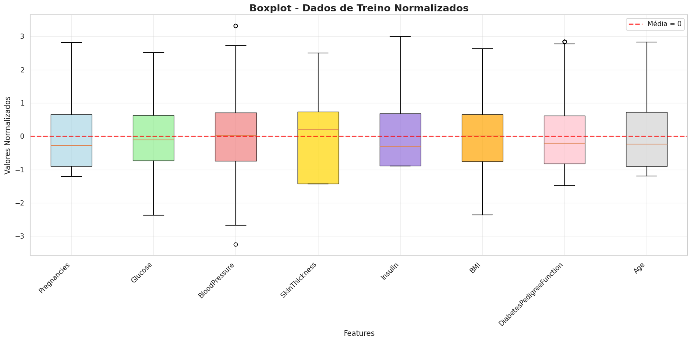

Fonte: elaborado pelo autor
•
Padronização (Z-score): cada variável foi reescalada para média 0 e desvio-padrão 1, evitando que features de maior magnitude dominem o aprendizado.
•
Resultado chave: o boxplot evidencia a linha tracejada (média = 0) centralizada em todas as features, com amplitudes semelhantes — sinal de variância preservada e escalas agora comparáveis, conforme discutido nos resultados.